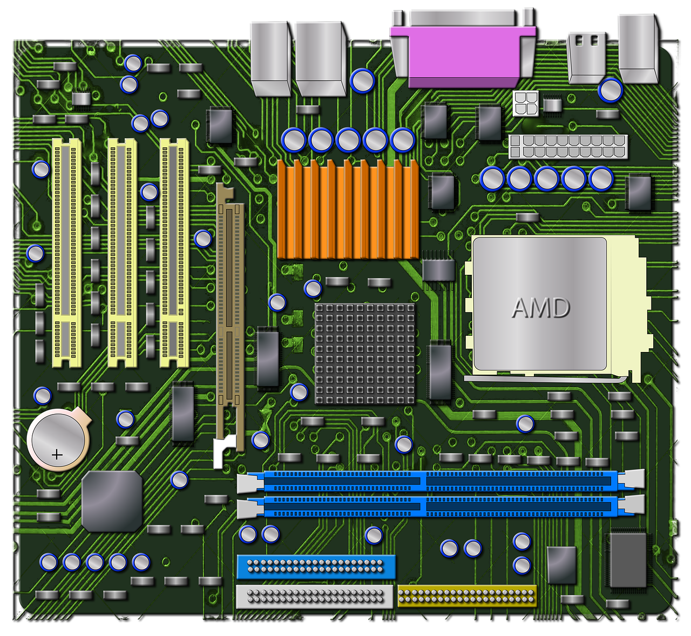

Vad är ett Moderkort?
Moderkortet fungerar som datorns systemkort och är den centrala och enligt många den viktigaste delen på en data för att data ska kunna fungera. Det är genom moderkortet som de olika enheterna ansluts genom och sammarbetar för att datorn ska fungera. Moderkortet har också koll på många små viktiga detaljer samt är de som lässer och hanterar inputs från tex usb.
Startsida
